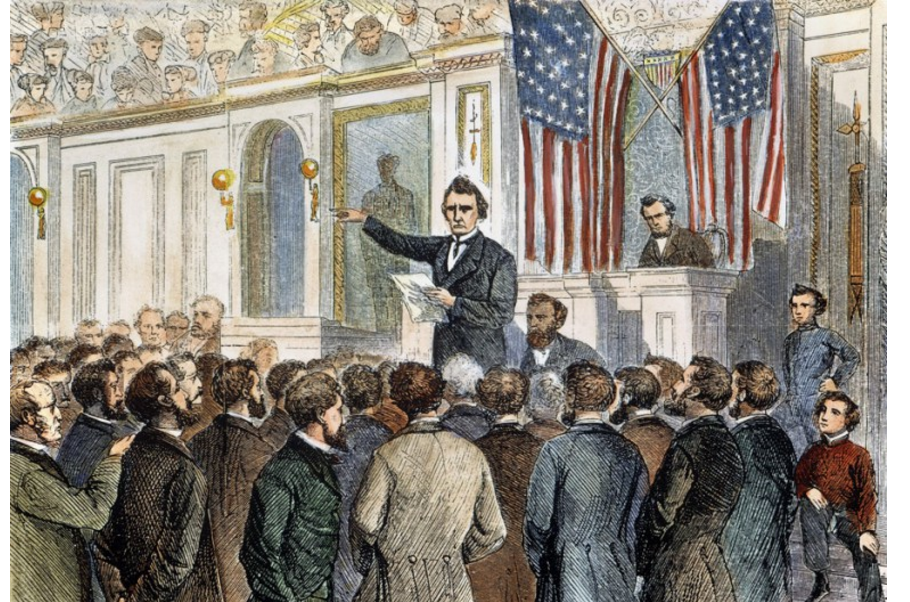

Tadeusz Kościuszko
There is a time when you have to sacrifice everything to have everything saved.

'I will not fight for the sake of szlachta alone, I want freedom for the whole nation, and only for such freedom am I willing to risk my life,'
he declared in what is one of his most famous quotes nowadays.
--- Tadeusz Kościuszko